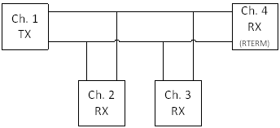
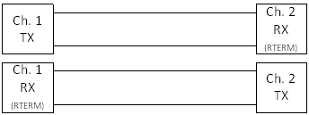
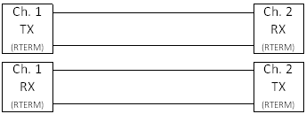
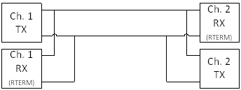
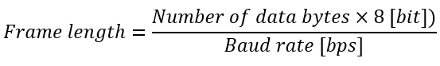
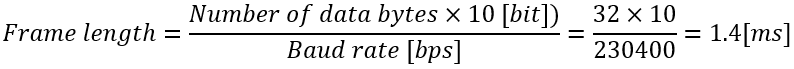
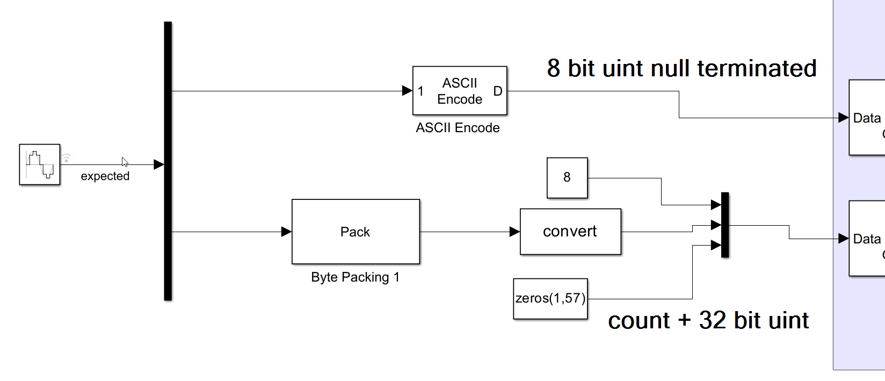
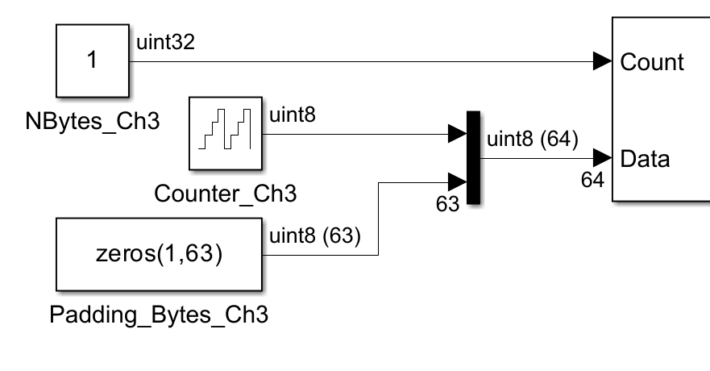

Serial Usage Notes — Usage information for onboard COM ports as well as serial I/O modules and code modules
Serial communication on Speedgoat real-time target machines is enabled as follows:
Onboard COM ports: motherboards used in most of the target machines include one or more COM serial ports, featuring a 9-pin D-sub connector. The pin mapping is included in the target machine user manual. These ports typically offer a limited baud rate (115 kbps) and software configuration options, and are intended for slow, asynchronous, non-cyclic communication (for example, read inputs from a terminal). The buffer is limited to a few bytes, so they are not appropriate for long messages
Serial I/O modules: these are dedicated I/O modules designed for robust serial communication. They are fully software configurable and support higher baud rates. The driver construction can be optimized to accommodate various use cases, including cyclic communication at fast sampling rates
Code modules: specific serial communication can be integrated into a configuration file for the configurable I/O modules or used in HDL Coder models using the Communication HDL I/O Blockset. Code modules can be customized to achieve very specific baud rates and meet special buffer sizes. Transceivers cannot be modified, and some special wiring requirements may not be supported
| Onboard COM | Serial I/O Modules | Code Modules | |
|---|---|---|---|
| Baud rates |
|
|
|
| Transceivers |
|
|
|
| Buffer size |
|
|
|
| Read/write modes |
|
|
|
The RS422 and RS485 protocols use differential transceivers. When using long cables, it is important to terminate the lines appropriately, to avoid data reflection. A few examples are provided below of the most common configurations.
Serial I/O modules may allow software configuration of the termination resistors and onboard COM ports, and FPGA I/O modules may or may not have termination resistors and options. Please refer to the specific target machine or I/O module user manual.
RS422 Multidrop configuration consists of one channel transmitting to multiple receivers. The transmitting node does not require a termination resistor. The receiving node at the end of the line does however require a termination resistor.
Some I/O modules have termination resistors that cannot be enabled/disabled and therefore may not be appropriate for multidrop configuration. Some drivers include "RS422 Multidrop" for the Transceiver Setup parameter.

Full-duplex communication means that each node can receive and transmit data at the same time. Separate TX and RX channels are used. The termination resistor is required at the end of the line. Some drivers include "RS422 full duplex" or "RS422" for the Transceiver Setup parameter.

For RS485, the termination resistor is required on both ends. Some drivers include "RS485 full duplex" for the Transceiver Setup parameter. If there is an option for "RS485 turnaround", it must be enabled.

Half-duplex configuration allows bytes to be sent and received on the same node, but not at the same time (the sender and receiver are mutually excluded). In this case, the termination resistor is required at the receiver side only. Some drivers include "RS485 half duplex" for the Transceiver Setup parameter. If there is an option for "RS485 turnaround", it must be enabled.

When we use serial communication, by definition, nodes are transmitting and receiving bytes one after the other.
In most cases, the message frame length will set the minimum sampling time for sending a new message. To configure the receiving sampling time, it is also important to consider the delay between two messages. It is important that the buffer is read faster than the minimum delay, to ensure that no messages are missing.
The message frame length is defined as follows and depends on the baud rate expressed in bits per second (bps):

For simple RS232/RS422/RS485 communication, data bytes have one start bit and one or two stop bits. Consequently, the number of data bytes is multiplied by 10 (or 11) instead of 8 bits.
Baud rate = 230400 bps
Number of data bytes = 32
RS232 communication, 1 start and 1 stop bit

This means that a 32-byte message at 230400 bps will physically take 1.4 ms on the serial line. The main consequence of this result is that after sending this message, 1.4 ms at the very least must elapse before another message is sent on the line.
If the buffer size is smaller than the message size, then we must also consider the time required to flush the buffer. This will introduce an additional delay (typically about a few tens of microseconds, depending on the I/O module).
It is also important to consider cable length and other nodes on the line which may also transmit other messages (or send responses).
The sampling time of the transmitter side must eventually be slow enough to accommodate the above requirements.
Code modules support polling. In this case, the hardware driver blocks are used without requiring the software FIFO blocks or interrupts.
Data transmission: the data is sent directly to the hardware buffer at a defined sample time.
Data reception: the hardware buffer block is read at a regular sample time, fast enough to avoid missing data.
Depending on the specific use case, it may be possible to optimize the construction; for example, data could be sent using the hardware FIFO and received with interrupts and software FIFO blocks to ensure full synchronization.
When activating the legacy mode for a specific read or write block, the first element of the data in-/output vector contains the information about the size of the payload in bytes. The following is an example of a possible input configuration:

Without legacy mode the read and write blocks use two different ports. The count port gives or receives information about the payload size, such as the first element in a vector when using the legacy mode.

The input or output port widths must always be the same size as the FIFO buffers defined in the Simulink block mask. To achieve the same length, even if the payload is less, the rest of the buffer must be filled up with zero padding bytes (as seen in the pictures above).
The Simulink Real-Time/RS232 library provides utilities blocks that can be used in combination with the send and receive blocks.
Examples can be found in the MathWorks help documentation for Simulink Real-Time.
The library and examples refer to "RS232" but can also be used for any other serial communication protocol.
Detailed information about serial communication using Simulink Real-Time is available in the following online application notes:
Where can I find information about serial communication using Simulink Real-Time?